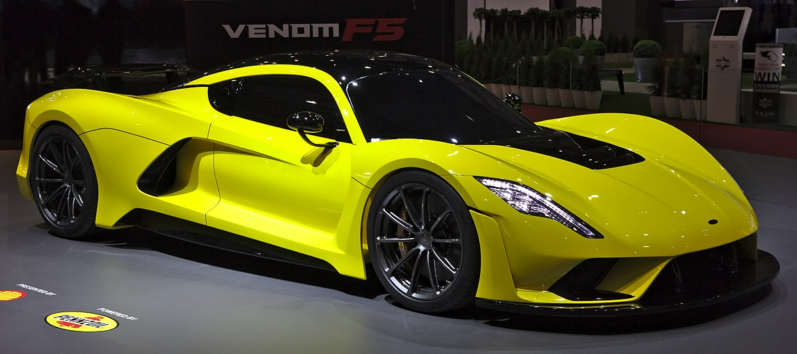
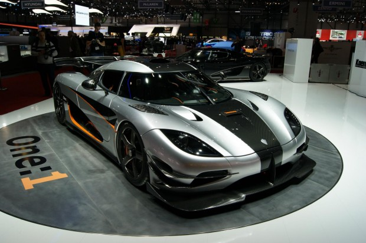
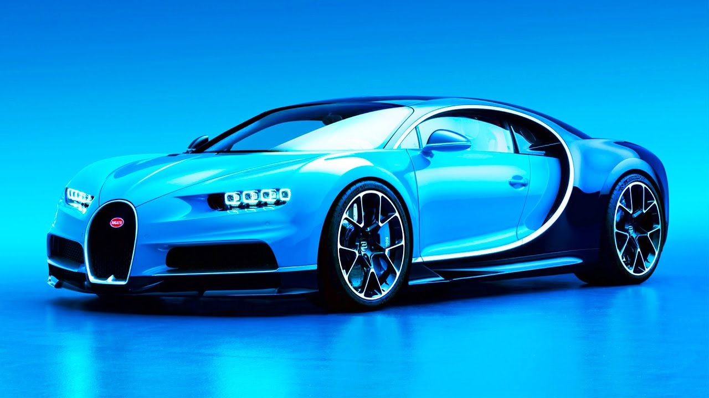
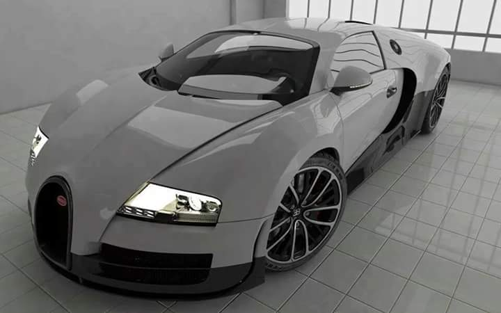
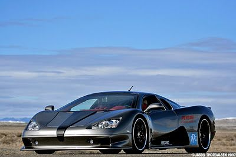
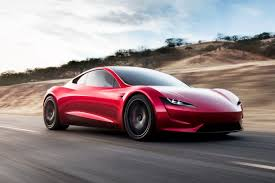
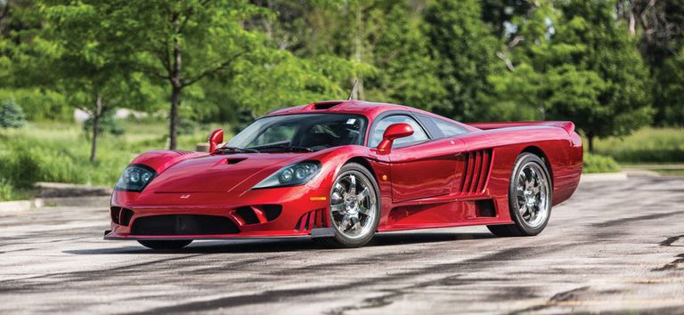
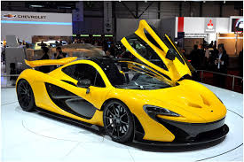

car biggest fans
cars biggest fans
- HENNESSEY VENOM F5: 301 MPh
Boasting a claimed top speed of 301 mph, the Venom F5 smashes the previous top speed figure by more than a school zone speed limit. To do so, Hennessey started with an all-new, 2,950-pound carbon fiber chassis (the Venom GT is based on the Lotus Exige), and bolted a 1,600-hp, 7,4-liter, twin-turbo V8 to it. The results are absolutely astonishing, as the car can reportedly go from 0 to 249 to 0 mph in less than 30 seconds total. Hennessey has yet to confirm its top speed with the Guinness Book of World Records, so the Koenigsegg Agera RS remains the official fastest car in the world … for now.

- KOENIGSEGG AGERA RS: 278 MPH
In terms of spec sheets, Hennessey’s Venom F5 is more impressive. Its claimed top speed of 301 mph obliterates everything else on this list by a significant margin, but Hennessey hasn’t verified its numbers with the Guinness Book of World Records. Koenigsegg has, so even though it gets the silver medal here, in the real world, the Agera RS is the true speed king.
To set the official record, Koenigsegg asked the Nevada Department of Transportation to close an 11-mile stretch of Route 160 between Las Vegas and Pahrump. On public roads, the 1,160-hp Swedish supercar hit 284.55 mph during its first run and 271.19 mph during the second, which averages out to 277.9 mph. Watch the run here.

- BUGATTI CHIRON: 261 MPH
No list is complete without a supercar from the legendary Bugatti. The Veyron was a monumental feat of engineering, a supercar whose performance was so marvelous, Top Gear presenter James May compared it to the automobile equivalent of the Concorde. After 10 years of production, the Volkswagen Group has unveiled the Veyron’s successor, the Bugatti Chiron. The Chiron is a king among supercars, which is fitting, as kings will be among the few to obtain one — only 500 were released for the first generation, and they cost a staggering $2.6 million each.

- BUGATTI VEYRON SUPER SPORT: 268 MPH
When Volkswagen purchased the Bugatti brand, it had one goal: build the fastest production car in the world. The original Veyron achieved that goal, and with a price tag of $1.7 million and a quad-turbocharged W16 engine producing 1,000 hp. The Veyron was soon dethroned by the SSC Ultimate Aero, so Bugatti came back with the Veyron Super Sport. This beat pumps out an astonishing 1200 HP, and numerous aerodynamic changes meant to help gain a few extra miles per hour.
With a top speed of 268 mph recorded at Volkswagen’s test track, the Veyron Super Sport was once recognized as the world’s second fastest production car by the Guinness Book of World Records.

- SCC ULTIMATE AERO: 256 MPH
Shelby SuperCars (SSC) has nothing to do with Carroll Shelby of Cobra fame, but for a moment its Ultimate Aero was the fastest production car in the world. It reached a top speed of 256 mph back in 2007, beating the non-Super Sport version of the Veyron.
Helping it achieve that warm speed was a 6.3-liter twin-turbocharged V8 with 1,287 hp. There are no electronic driver aids to help control that power either, creating a purer driving experience for those with talent.

- TESLA ROADSTER: 250MPH (UNVERIFIED)
The original Tesla Roadster was a sports car based on the Lotus Elise, and although its performance was certainly impressive, it’s more known for establishing Tesla as a legitimate player in the automotive world. The new Roadster is another thing altogether. This second-generation Roadster features the most impressive spec sheet of any EV before it — 0 to 60 mph in 1.9 seconds, 0 to 100 mph in 4.2 seconds, and a claimed top speed of 250 mph. In addition to the ridiculous acceleration and speed, Musk claims the Roadster will boast a range of 620 miles.

- SALEEN S7 TWIN TURBO: 248 MPH
Among performance addicts, the Saleen S7 is legend: exotic styling, insane performance, and tuning potential to name a few. But much of the vehicle’s appeal is actually historical. Produced from 2000 to 2009, the S7 was America’s first mid-engined supercar. Producing 750 hp, the vehicle could hit 60 mph in just 2.8 seconds before smashing the quarter-mile in 10.5 seconds. Its most stunning statistic is its top speed of 248 mph, making it one of the fastest cars ever put to pavement.

- MCLAREN F1: 241 MPH
The Mclaren F1 is more than just a former world’s-fastest car. With its carbon-fiber body, gold-lined engine bay, 6.1-liter BMW M V12, and center driver’s seat, it just might be the coolest car ever made.
Years before it attempted to take on Ferrari and Porsche with the MP4-12C, McLaren was known only as a successful race team in Formula 1 and the defunct Can-Am series. Yet its first road car wasn’t exactly an amateur effort. The F1 went on to a fairly successful racing career in its own right, winning the 24 Hours of Le Mans in 1995.

2018: Top 10 Fastest Cars in The World
- Hennessey Venom F5: 301 MPH. ...
- Koenigsegg Agera RS: 278 MPH. ...
-
- Bugatti Chiron: 261 MPH. ...
- Bugatti Veyron Super Sport: 268 MPH. ...
- SCC Ultimate Aero: 256 MPH. ...
- Tesla Roadster: 250MPH (unverified) ...
- Saleen S7 Twin Turbo: 248 MPH.
- mclaren: 207mph